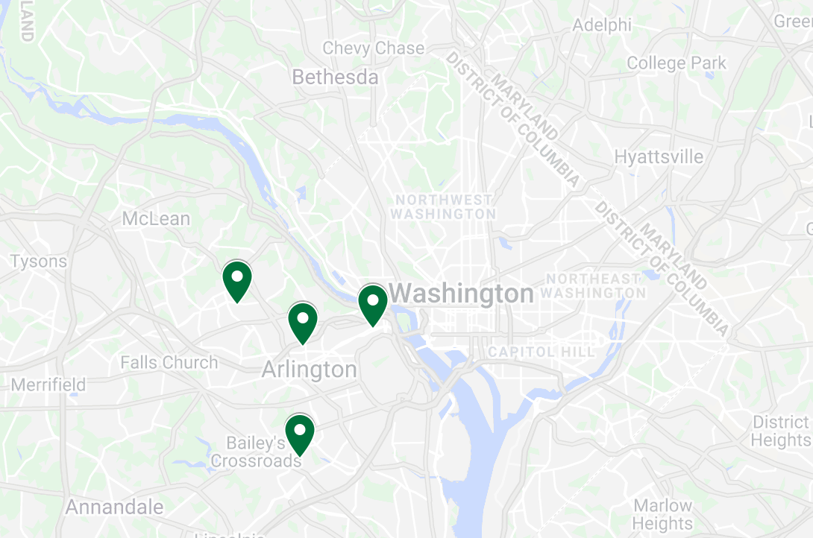

An analysis of tuition and salary data across the U.S. with an in depth examination of one county's application selections.
By Gretchen Dimina
Many factors need to be considered when deciding where to attend college: location, degree offerings, social life and sports to name a few. But the cost of tuition may be the single most important factor for many students. College is a significant financial investment and many may wonder, how quickly will I earn back the money I have spent on my education? This visual essay examines application data from a public school district located right outside of Washington DC in the context of broader information regarding tuition and earning potential across the country. All national data was gathered from PayScale Inc and The Chronicle of Higher Education (2018-19). Local data for Arlington, VA public high school seniors was self reported by students and sourced from the September 2020 issue of Arlington Magazine. The localized data focuses on a subset (the top 50 schools as defined by the number of applications submitted) of Arlington graduates' application submissions.
Just how expensive is college in the United States?
The exact price of college tuition is a difficult number to pin down. Costs vary widely by institution and there can be dramatic differences between the price published by a specific university and the net price (after financial aid) which a student actually pays. In 2019, the average cost of one year of tuition (including room and board) for public in-state universities hovered around $26,000. Out of state students paid an average of $37,000 for public schools and private institutions charged around $48,000 regardless of state residency. The interactive graphic below explores a sample of nearly 2000 public and private institutions across the U.S., revealing the highest price (out of state or private) a student may expect to pay for one year of higher education.
Closeup: Arlington, VA High Schools Class of 2020
Arlington, a suburb of northern Virginia located across the Potomac River from Washington DC, is a dynamic community with a population of around 230,000 residents. The median household income consistently ranks in the top 10 for the nation and over one third of the county's residents have graduate degrees. Over 90% of the students in Arlington Public Schools (APS) plan to attend college and the county's high schools rank in the top 2% of the nation. In short, Arlington is a county where education and professional success are deemed a priority.

There are four public high schools located in Arlington, VA with around 1700 graduating seniors.
Where did they apply?
Not surprisingly, institutions in their home state of Virginia received far and away the most applications from Arlington seniors. These students also showed significant interest in other east coast states, such as Pennsylvania, New York and Massachusetts. California was the only west coast state to make the top 10, with students applying to three universities there. Note: state rankings and schools highlighted in the graphic below are calculated from the 50 colleges receiving the most applications from Arlington students in 2020. This is not a comprehensive list of all schools applied to within a given state.
How expensive are the schools they applied to?
For students in the U.S., staying in-state and attending publicly funded college is typically the most economical choice. This approach proved to be no exception for high school students in Arlington where the vast majority of applications went to public universities within the state of Virginia where they could reap the benefits of lower tuition and higher acceptance rates. Arlington students still showed significant interest in pricier private schools, with applications being sent to 23 colleges in the $50,000-$65,000 annual tuition range.
Now how might these choices translate to future financial success as a college graduate? An analysis of median mid-career salaries (defined as earnings 10 years after graduation) from colleges across the nation reveals interesting trends surrounding the school choices by Arlington students. College graduates that attended schools in the states of California, New York, Massachusetts, and Washington DC showed some of the highest earning potentials in the nation. These states also happen to be among the top locations where Arlington students applied.
Note: the relative darkness of the outer ring of a state's circle represents the number of applications submitted by Arlington students, with the darkest green (VA) representing the largest number of state applications. The lightest circle represents zero applicants in the top 50 schools subset.
Takeaways
In reviewing the financial data for the 50 most applied to universities by Arlington's class of 2020 (as seen in the graphic below), it is revealed that the average tuition for a Virginia resident is $41,438 and the average mid-career salary is $112,548. While nearly all of the Virginia schools fall (predictably) below the average tuition rate, the majority also fall below the average earning potential. Two notable exceptions include the University of Virginia and the College of William & Mary, ranked respectively #1 and #2 for publicly funded institutions in the state of VA. For those students who do not have financial limitations and are eager to leave their home state, Ivy League schools appear to offer the biggest return on investment with graduates from the University of Pennsylvania having the highest earning potential in this particular subset of data.
Many factors are key to actually achieving this earning potential - not the least of which is, of course, being accepted into these high ranking schools. Choice of degree, grades, and early career experience are certainly very influential as well. While many factors need to be explored when deciding where to apply to and ultimately attend college, this analysis provides evidence that perhaps the highest ranking public universities in your state may offer the biggest return on investment and set a student on the path to a profitable future.